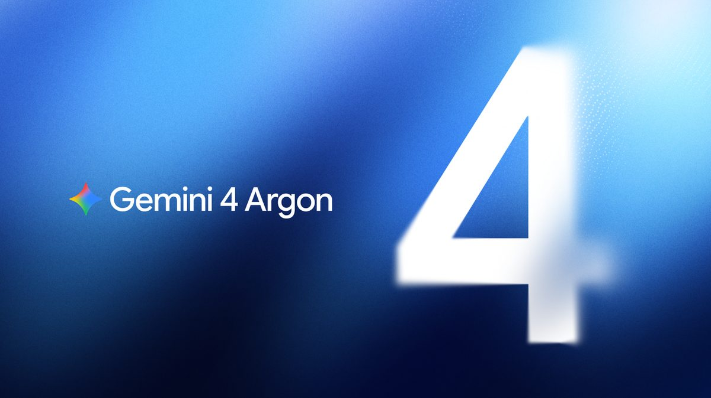

ChatGPT、Claude、Cursor、Midjourney… 主流 AI 工具的横向对比与深度评测。
9 月 30 日，Google DeepMind 发布 Gemini 4 Argon，智能指数 53 分重回前三，与 GPT-6 Astra 持平、比前一天上线的 GPT-6.1 Sol 高 1 分。促销价下每任务成本 1.99 美元，约为 Astra 的六成，幻觉率 15% 为同档最低，单次输出上限提到 100 万 token。同一天 OpenAI 也在压价格，前沿竞赛就此分成“价格分发”与“推理安全”两条路。
看今日完整快报 →
ChatGPT · Claude · Kimi · DeepSeek · Gemini
5 款工具对比 →Midjourney · DALL·E 3 · SD · Firefly · Recraft
5 款工具对比 →Cursor · Copilot · Windsurf · Codex · Claude Code
5 款工具对比 →Runway · Pika · Kling · Vidu
4 款工具对比 →ElevenLabs · Fish Audio · CosyVoice · Azure · OpenAI
5 款工具对比 →ChatGPT vs Claude 深度横评
阅读 →Cursor、Copilot、Windsurf、Codex CLI、Claude Code 全面对比。包含 12 个 FAQ、11 种场景决策矩阵和真实编码实战案例。
ElevenLabs、Fish Audio、CosyVoice、Azure TTS、OpenAI TTS 对比。包含盲听测试、方言专项评测和 9 场景决策矩阵。